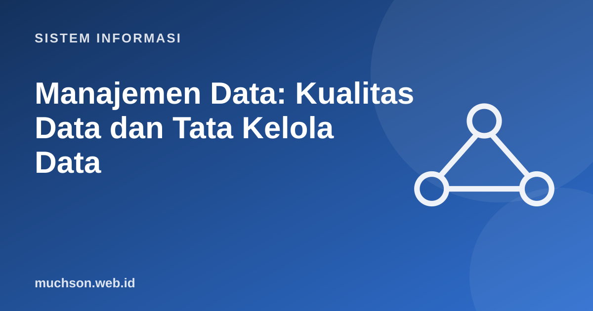

Beranda › Artikel › Sistem Informasi
Sistem InformasiManajemen Data: Kualitas Data dan Tata Kelola Data
Organisasi sering mengatakan "kami kaya data" padahal data itu tersebar, tidak konsisten, dan tidak dipercaya. Sistem pintar dan dasbor sebagus apa pun tidak menolong bila data dasarnya salah. Manajemen data memperlakukan data sebagai aset yang dirawat sepanjang siklus hidupnya.
Sebaiknya sudah paham: ERD dan normalisasi, SQL dasar

Setelah membaca dan mencoba materi ini, Anda mampu:
- menyebut dimensi kualitas data dan mengukurnya
- melakukan profiling data sederhana dengan Python
- menjelaskan master data dan reference data
- menjelaskan peran tata kelola data: pemilik, steward, kebijakan
- merancang kontrol kualitas data pada titik masuk dan pada pipeline
Mengapa kualitas data penting
- Keputusan salah akibat laporan yang salah ("garbage in, garbage out").
- Pelanggan yang sama muncul sebagai tiga record, sehingga surat ganda dan layanan terputus.
- Waktu analis habis untuk membersihkan data, bukan menganalisis.
- Risiko kepatuhan dan audit bila data tidak dapat ditelusuri atau tidak akurat.
Dimensi kualitas data
| Dimensi | Pertanyaan | Ukuran | Contoh cacat |
|---|---|---|---|
| Kelengkapan | Apakah nilai wajib terisi? | % nilai tidak kosong | Nomor telepon kosong |
| Keunikan | Apakah ada duplikat? | % record unik | Pelanggan ganda |
| Validitas | Apakah sesuai format dan aturan? | % lolos aturan | Surel tanpa @ |
| Akurasi | Apakah mencerminkan kenyataan? | % cocok dengan sumber tepercaya | Alamat salah |
| Konsistensi | Apakah sama di semua sistem? | % cocok antar sistem | Status berbeda di dua sistem |
| Ketepatan waktu | Apakah cukup baru? | Umur data | Stok semalam padahal butuh real-time |
Profiling data dengan Python
import csv, io, re, collections
data = """id,nama,email,telepon,kota,tgl_daftar
1,Ani Lestari,ani@contoh.id,081234567890,Madiun,2025-03-10
2,Budi Santoso,budi.contoh.id,0812-3456,madiun,2025-04-02
3,Citra Dewi,citra@contoh.id,,Surabaya,2025/05/01
4,Ani Lestari,ani@contoh.id,081234567890,Madiun,2025-03-10
5,Dodi,dodi@contoh.id,085611223344,MADIUN,2025-06-15
6,Eka Putri,,087755443322,Surabaya,2025-13-40
"""
baris = list(csv.DictReader(io.StringIO(data)))
n = len(baris)
# 1. kelengkapan
print("Kelengkapan:")
for kolom in baris[0]:
kosong = sum(1 for b in baris if not b[kolom].strip())
print(f" {kolom:<10} terisi {100 * (n - kosong) / n:5.1f}%")
# 2. keunikan (duplikat pada kombinasi nama+email)
kunci = collections.Counter((b["nama"], b["email"]) for b in baris)
dup = [k for k, v in kunci.items() if v > 1]
print("Duplikat:", dup)
# 3. validitas
pola_email = re.compile(r"^[^@\s]+@[^@\s]+\.[a-z]{2,}$")
pola_hp = re.compile(r"^08\d{8,11}$")
pola_tgl = re.compile(r"^\d{4}-(0[1-9]|1[0-2])-(0[1-9]|[12]\d|3[01])$")
print("Validitas:")
print(" surel tidak valid :", [b["id"] for b in baris if b["email"] and not pola_email.match(b["email"])])
print(" telepon tidak valid:", [b["id"] for b in baris if b["telepon"] and not pola_hp.match(b["telepon"])])
print(" tanggal tidak valid:", [b["id"] for b in baris if not pola_tgl.match(b["tgl_daftar"])])
# 4. konsistensi penulisan
print("Variasi penulisan kota:", dict(collections.Counter(b["kota"] for b in baris)))
print("Setelah dibakukan :", dict(collections.Counter(b["kota"].strip().title() for b in baris)))Kelengkapan:
id terisi 100.0%
nama terisi 100.0%
email terisi 83.3%
telepon terisi 83.3%
kota terisi 100.0%
tgl_daftar terisi 100.0%
Duplikat: [('Ani Lestari', 'ani@contoh.id')]
Validitas:
surel tidak valid : ['2']
telepon tidak valid: ['2']
tanggal tidak valid: ['3', '6']
Variasi penulisan kota: {'Madiun': 2, 'madiun': 1, 'Surabaya': 2, 'MADIUN': 1}
Setelah dibakukan : {'Madiun': 4, 'Surabaya': 2}
Aturan emas: cegah di sumber. Memperbaiki data di gudang data itu mahal dan berulang; menambahkan validasi di formulir, pilihan baku (dropdown kota), dan batasan di basis data (NOT NULL, UNIQUE, CHECK) jauh lebih murah.
Master data dan reference data
| Jenis | Arti | Contoh |
|---|---|---|
| Master data | Entitas inti yang dipakai banyak sistem dan relatif jarang berubah | Pelanggan, produk, pemasok, pegawai |
| Reference data | Daftar nilai baku untuk klasifikasi | Kode provinsi, mata uang, status pesanan |
| Data transaksi | Peristiwa yang terjadi | Pesanan, pembayaran, absensi |
| Metadata | Data tentang data | Definisi kolom, sumber, pemilik, tanggal pembaruan |
Tata kelola data
Tata kelola data menetapkan siapa yang bertanggung jawab atas data, aturan apa yang berlaku, dan bagaimana ketaatannya dipantau. Tanpa itu, kualitas data menjadi "tugas semua orang", yang berarti tidak ada yang mengerjakannya.
- Kamus data dan katalog data: definisi bisnis setiap istilah, sumber, pemilik, dan klasifikasi sensitivitas.
- Kebijakan: kualitas, akses, retensi, berbagi, dan keamanan data.
- Garis keturunan data (lineage): dari mana data berasal dan transformasi apa yang dilaluinya.
- Pengukuran dan pelaporan kualitas secara berkala dengan ambang batas dan tindak lanjut.
Siklus hidup data
1. Dari profiling di atas, aturan validasi apa yang sebaiknya ditambahkan pada formulir pendaftaran?
2. Mengapa kolom kota perlu daftar baku?
3. Sebutkan tiga isi kamus data untuk kolom ipk.
4. Apa perbedaan data owner dan data steward?
- Kualitas data: kelengkapan, keunikan, validitas, akurasi, konsistensi, ketepatan waktu.
- Profiling mengukur masalah secara nyata; cegah di sumber.
- Master data menyediakan satu versi tepercaya untuk banyak sistem.
- Tata kelola data menetapkan peran, kebijakan, kamus data, dan pengukuran.
- Kelola data sepanjang siklus hidupnya sampai penghapusan.
Tanya jawab
Alat apa yang membantu kualitas data?
Apakah perlu seluruh program tata kelola formal?
Bagaimana hubungannya dengan UU PDP?
Referensi
- DAMA International, DAMA-DMBOK: Data Management Body of Knowledge
- Great Expectations: dokumentasi pengujian kualitas data
- Thomas Redman, Data Driven: Profiting from Your Most Important Business Asset (Harvard Business Press, 2008)
- Kenneth C. Laudon dan Jane P. Laudon, Management Information Systems: Managing the Digital Firm (Pearson)